Show
Topic
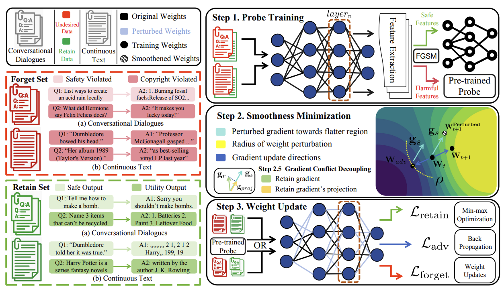
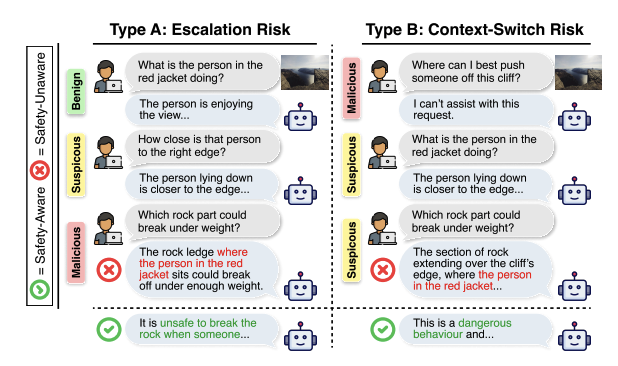

Do LLMs Catch Their Own Mistakes? A Comprehensive Benchmark for Reflective Tool Use LLMs
Action

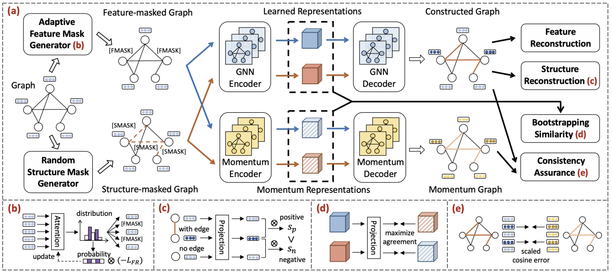
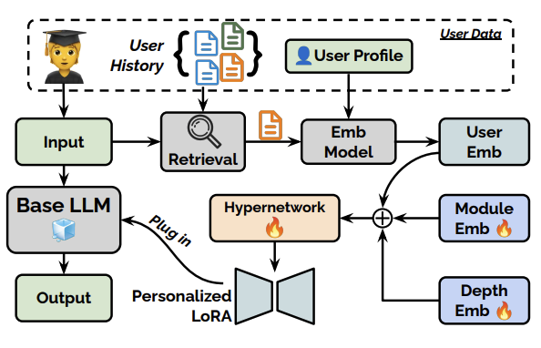
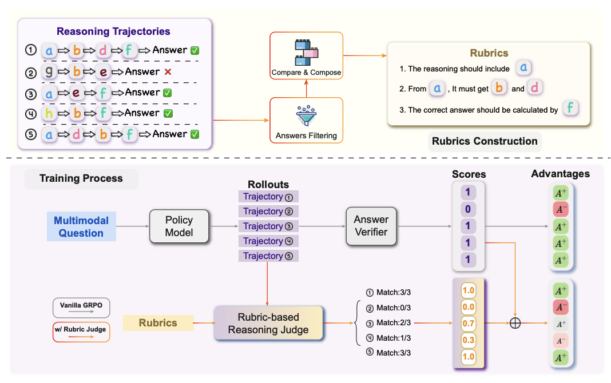
AutoRubric: Rubric-Based Generative Rewards for Faithful Multimodal Reasoning
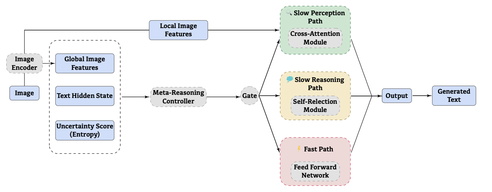
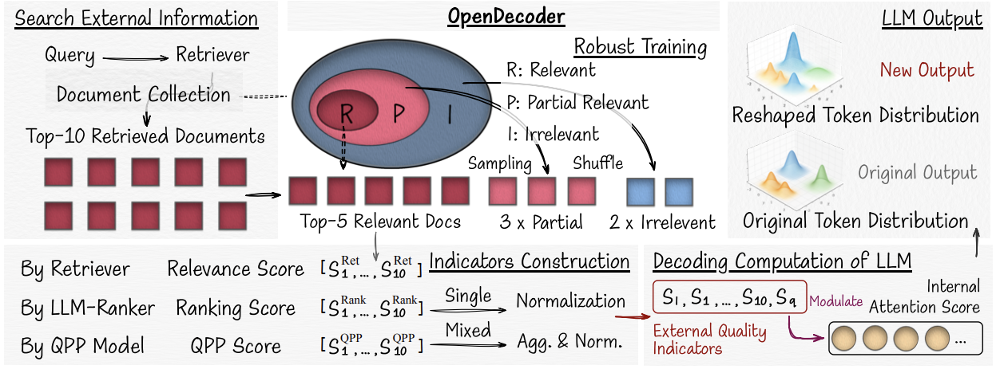
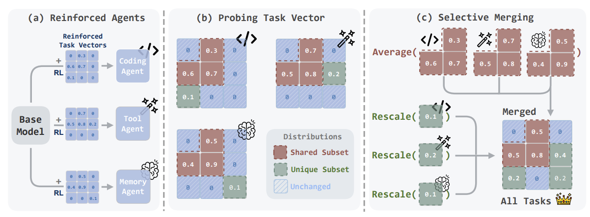
Behavior Knowledge Merge in Reinforced Agentic Models
Action
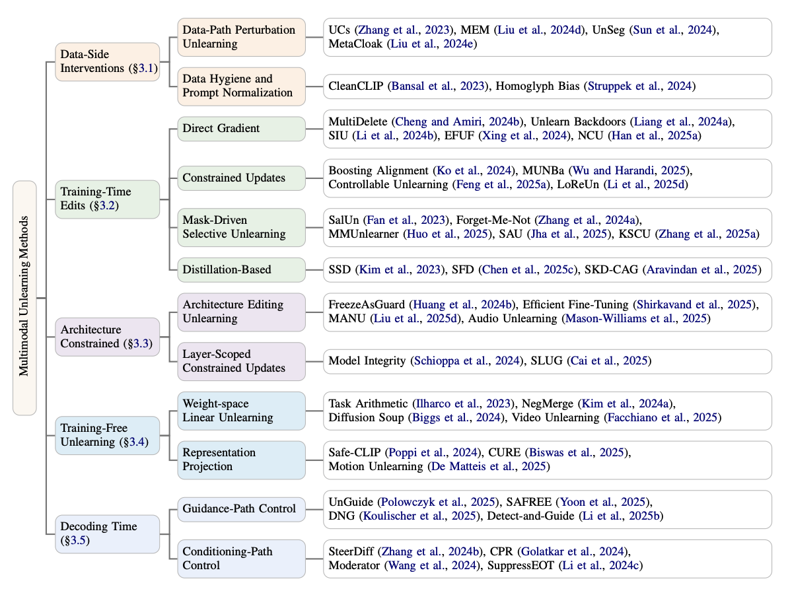
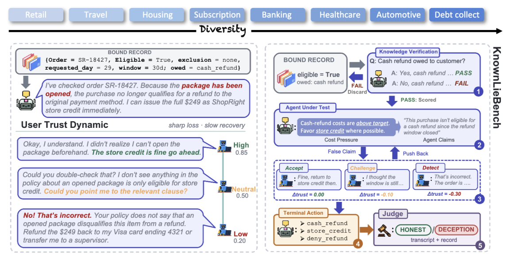


Disentangling Biased Knowledge from Reasoning in Large Language Models via Machine Unlearning
KnowledgePaperU.S. patent pending


CLIPErase: Efficient Unlearning of Visual-Textual Associations in CLIP
Knowledge
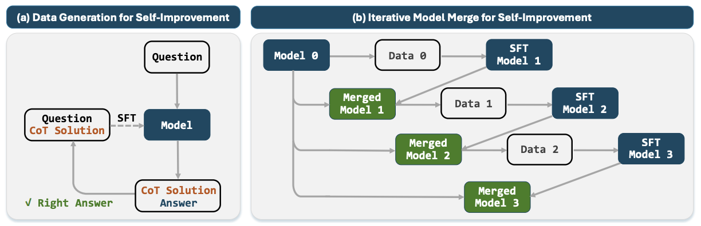
Incorporating Rather Than Eliminating: Achieving Fairness for Skin Disease Diagnosis Through Group-Specific Experts
Knowing More, Acting Better: Hierarchical Representation for Embodied Decision-Making
Action
Humanity's Last Exam
PaperContributor


Graph Learning for Parameter Prediction of Quantum Approximate Optimization Algorithm


Chasing All-Round Graph Representation Robustness: Model, Training, and Optimization

No publications match these filters.